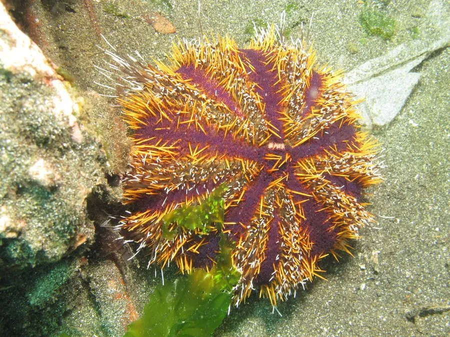

其他无脊椎动物 · 动物界
白棘三列海胆 Tripneustes gratilla

印度洋—太平洋珊瑚礁的海胆，棘刺短而白，外壳呈紫黑色，以海草和藻类为食，可食用但棘刺有轻微毒性。
- 分类
- 门棘索动物门纲海胆纲目拱齿目科毒棘海胆科属三列海胆属
- 栖息环境
- 热带珊瑚礁、海草床和沙泥底，水深 0–30 米
- 地理分布
- 印度洋—太平洋热带海域，从东非到太平洋岛屿
- 保护级别
- IUCN 暂无评估
物种志
白棘三列海胆的壳径 8–12 厘米，棘刺短而密，呈白色或浅黄色，壳面呈紫黑色或深褐色，管足和疣突颜色较浅。它常把海草、贝壳和碎屑顶在棘刺上伪装自己，因此英文称“收集者海胆”。
它分布于印度洋—太平洋的热带珊瑚礁和海草床，水深 0–30 米，白天藏在礁石缝隙和海草间，夜间啃食海草、藻类 and 有机碎屑（更正：以海草、藻类和有机碎屑为食）。它的棘刺含有轻微毒素，刺伤后会引起疼痛和红肿，但一般不如刺冠海胆严重。白棘三列海胆在某些地区被作为食用海胆捕捞，其生殖腺可食用；过度捕捞和栖息地破坏会影响种群，养殖和增殖放流已在部分地区开展。
形态与习性
- 壳径约 8–12 cm
- 棘刺短而密，白色或浅黄色，含轻微毒素
- 食性海草、藻类和有机碎屑
- 活动节律夜行性，白天藏在礁石缝隙和海草间
- 伪装常用海草和碎屑顶在棘刺上
- 利用生殖腺可食用，部分地区有人工养殖
趣味知识
- 白棘三列海胆会把海草和贝壳顶在棘刺上，像给自己打伞。
- 它的棘刺短而白，与紫黑色的壳形成鲜明对比。
- 这种海胆的生殖腺可食用，是部分热带地区的渔业对象。